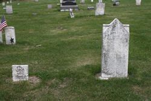

John troyer

John Troyer (3 February 1753 – 28 February 1842)[1] was a farmer, businessman, medical practitioner, and exorcist in the Norfolk County, Ontario region.
Troyer and family emigrated from
 southeastern Pennsylvania in 1789 and settled in Ontario, Canada, near Long Point on Lake Erie on a farm. The farm is still known as Troyer's Flats. This Amish family appears to have been successful in their economic pursuits with a gristmill and boat construction in addition to the farm. He became well known for his medical abilities although he had no formal training. He was locally famous for his herbal remedies.
Local legends abounded concerning witches and other paranormal activities where Dr Troyer was involved. He was known to have had exaggerated fears of witches. Examples of his witch traps (modified bear traps) can be seen in the Eva Brook Donnelly Museum in Norfolk County, Ontario. One story focused on his attempts to find a stash of gold, dumped in the area the previous century by a fur trader named David Ramsay. Another, recorded in the book Tales of Long Point, tells of him following several witches to where they kept their broom sticks, then stealing one of their broom sticks for himself, flying through the air to view a meeting of witches held at a distant location.
southeastern Pennsylvania in 1789 and settled in Ontario, Canada, near Long Point on Lake Erie on a farm. The farm is still known as Troyer's Flats. This Amish family appears to have been successful in their economic pursuits with a gristmill and boat construction in addition to the farm. He became well known for his medical abilities although he had no formal training. He was locally famous for his herbal remedies.
Local legends abounded concerning witches and other paranormal activities where Dr Troyer was involved. He was known to have had exaggerated fears of witches. Examples of his witch traps (modified bear traps) can be seen in the Eva Brook Donnelly Museum in Norfolk County, Ontario. One story focused on his attempts to find a stash of gold, dumped in the area the previous century by a fur trader named David Ramsay. Another, recorded in the book Tales of Long Point, tells of him following several witches to where they kept their broom sticks, then stealing one of their broom sticks for himself, flying through the air to view a meeting of witches held at a distant location.